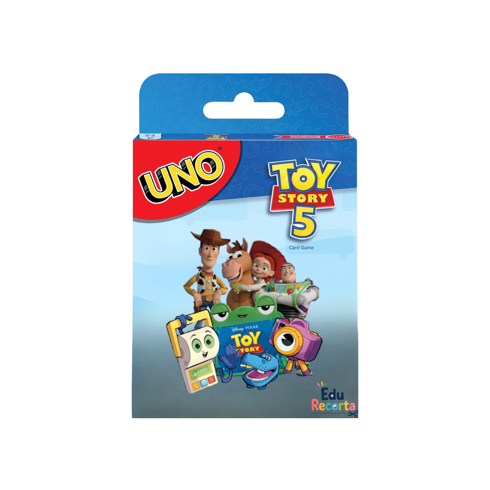
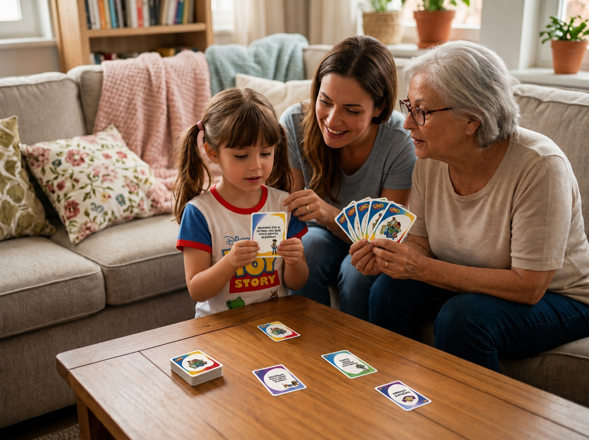
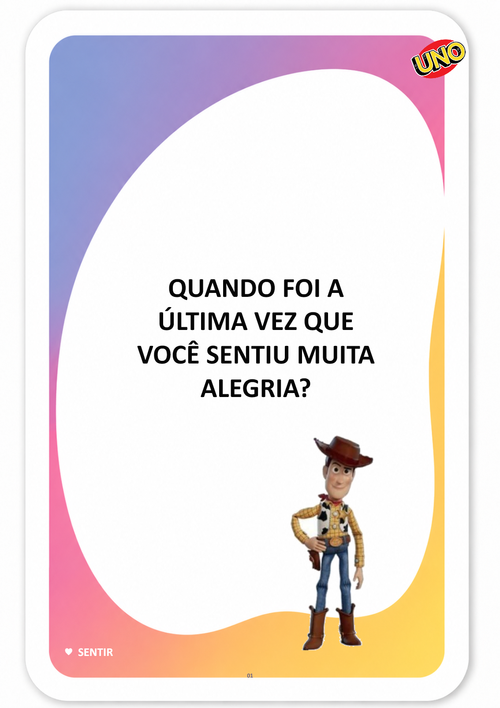
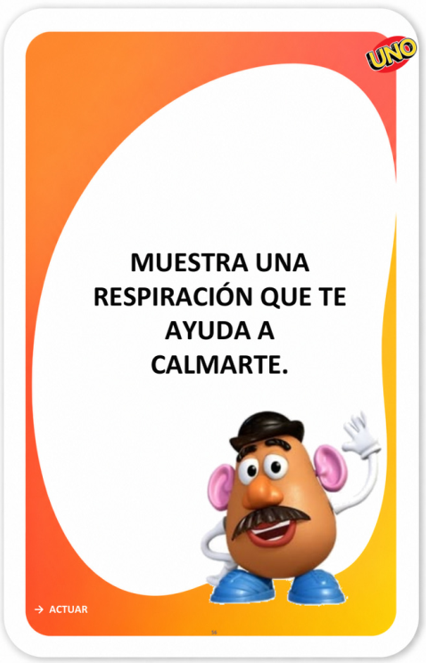
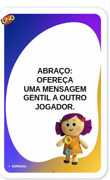

Baraja de los
Sentimientos
Mucho más que hablar de emociones. Es aprender qué hacer con ellas.
Con preguntas, situaciones y pequeños retos, la Baraja de los Sentimientos estimula el autoconocimiento, la expresión emocional, la autorregulación, la empatía, la comunicación y la convivencia — convirtiendo conversaciones que muchas veces resultan difíciles para el niño en una dinámica ligera y natural.






¿Por qué a todos los niños les encanta jugar?
Rompehielos inmediato
Crea un vínculo instantáneo con el niño desde el primer minuto de la sesión.
Regulación emocional en la práctica
Las cartas guían al niño a reconocer y expresar sus emociones de forma lúdica.
Listo en pocos minutos
Sin preparación complicada. Imprime, recorta y empieza a jugar en minutos.
Compromiso garantizado
A los niños les encantan los juegos de cartas. La implicación surge de forma natural y espontánea.
Material práctico, probado y de alta calidad
Archivo en alta resolución
PDF listo para imprimir en cualquier impresora, en casa o en la consulta.
Cartas de acción y emoción
Cartas temáticas ilustradas para reconocer, nombrar y expresar sentimientos.
Instrucciones incluidas
Una guía completa con las reglas y sugerencias de uso clínico y en familia.
Acceso inmediato
Lo recibes por correo electrónico pocos segundos después de la compra.
Dónde y cómo usarla
Para docentes
"En lugar de empezar una conversación sobre sentimientos solo con preguntas, el profesor puede sacar una carta y dejar que la propia actividad guíe la ronda de conversación."
Para familias
"Cuando el niño tiene dificultades para explicar lo que ha pasado, recursos como la Baraja, el Diario y la Caja del Miedo pueden ofrecer un punto de partida más concreto para la conversación."
Para consultas
"Los materiales permiten elegir diferentes caminos: identificar la emoción, percibir señales en el cuerpo, hablar sobre el miedo o seleccionar una estrategia de autorregulación."
¡Lo compraron y les encantó!
Testimonios de clientes satisfechos.
"Las cartas facilitaron muchísimo la ronda de conversación. Algunos niños que hablaban poco empezaron eligiendo una carta y luego consiguieron explicar mejor lo que sentían."
"Me gustó porque no se queda solo en la pregunta sobre la emoción. Después conseguimos elegir estrategias como respirar, pedir ayuda o hacer una pausa."
"El material me dio opciones para trabajar diferentes situaciones sin tener que preparar una actividad nueva cada vez."
5 regalos con el Kit Completo
Herramientas listas para imprimir que prolongan el juego mucho más allá de las cartas.
Diario de las Emociones: 7 Días
Un recorrido de registro emocional para que el niño identifique qué sintió, dónde lo sintió en el cuerpo, qué ocurrió, la intensidad de la emoción y qué puede ayudarle. Incluye un cierre semanal para observar avances y necesidades.
De regaloKit SOS de las Emociones
Tarjetas recortables con estrategias rápidas de autorregulación, como soplar la vela, contar, respirar, pedir ayuda, beber agua, dibujar lo que se siente, relajar el cuerpo y pensar en soluciones.
De regaloSemáforo de la Autorregulación
Método visual en cuatro pasos — Para, Piensa, Elige y Actúa — acompañado de situaciones cotidianas para enseñar al niño a transformar impulsos en elecciones más conscientes.
De regaloMisiones de la Empatía
Cartas con pequeñas misiones para practicar la escucha, la amabilidad, la cooperación, el respeto, la inclusión, la ayuda a los demás y el reconocimiento de los sentimientos ajenos.
De regaloGuía con 10 Dinámicas Listas
10 actividades paso a paso para trabajar la expresión emocional, la autorregulación, la empatía, la cooperación y el autoconocimiento en casa, en el colegio o en consulta. Incluye propuestas como Llegada Emocional, Soplar la Vela, Escucha Activa, Semáforo de la Elección, Misión de la Empatía y Dibujo de la Solución.
De regaloRegalos exclusivos incluidos — 100% gratis en el Kit Completo
¡Consigue ya la baraja de los sentimientos! ✨⭐
🃏 Baraja de las Emociones — 80 cartas
Preguntas, retos y situaciones para trabajar emociones, comunicación, autorregulación, empatía y convivencia.
🎁 + 5 REGALOS EXCLUSIVOS
- 🎁 Diario de las Emociones: 7 Días — registro emocional guiado, día a día
- 🎁 Kit SOS de las Emociones — estrategias rápidas de autorregulación
- 🎁 Semáforo de la Autorregulación — método visual en 4 pasos: Para, Piensa, Elige, Actúa
- 🎁 Misiones de la Empatía — retos para practicar la amabilidad y la escucha
- 🎁 Guía con 10 Dinámicas Listas — actividades listas para casa, colegio o consulta
Solo4,90€
Pago único · Acceso inmediato
🎴 ¡Quiero la baraja!🔒 Pago seguro
Super Pack
Baraja de las Emociones — 80 cartas
Preguntas, retos y situaciones para trabajar emociones, comunicación, autorregulación, empatía y convivencia.
- 🦸 Cuaderno Coraje — entender y afrontar el miedo
- 📦 Caja del Miedo — tarjetas para nombrar miedos infantiles
- 🎭 Emociones en Juego — kit con 15 personajes y 60 cartas
- 📚 Juego de Memoria — Elementos de la Narrativa — personaje, trama, conflicto
- 😊 Juego de las Emociones — identifica y expresa sentimientos
- 🧠 Juego de Memoria de las Emociones — 24 cartas — 12 parejas de memoria emocional
- 🎲 Juego del Miedo — recorrido sobre el miedo y la autoconfianza
🎁 + 5 REGALOS EXCLUSIVOS
- 🎁 Diario de las Emociones: 7 Días — registro emocional guiado, día a día
- 🎁 Kit SOS de las Emociones — estrategias rápidas de autorregulación
- 🎁 Semáforo de la Autorregulación — método visual en 4 pasos: Para, Piensa, Elige, Actúa
- 🎁 Misiones de la Empatía — retos para practicar la amabilidad y la escucha
- 🎁 Guía con 10 Dinámicas Listas — actividades listas para casa, colegio o consulta
Super Pack por9,90€
Pago único · Acceso inmediato
🎯 ¡Quiero el Super Pack!🔒 Pago seguro · Entrega inmediata
Garantía incondicional de 15 días
Si por cualquier motivo no quedas satisfecho con el material, solo tienes que escribirnos en un plazo de 15 días y te devolvemos el 100% de tu dinero, sin preguntas.
Preguntas frecuentes
¿El material es físico o digital?
Digital. Recibes el PDF por correo electrónico y lo imprimes donde quieras, las veces que quieras.
¿A partir de qué edad se recomienda?
A partir de los 4 años. Las cartas son adecuadas para niños de infantil y de primaria.
Soy padre o madre, ¿puedo usarlo con mis hijos?
Por supuesto. El juego está pensado tanto para profesionales como para familias. Las instrucciones incluyen consejos para usarlo en casa.
¿Cómo recibo el acceso?
Justo después del pago recibirás un correo electrónico con el enlace para descargar el archivo. En pocos segundos.